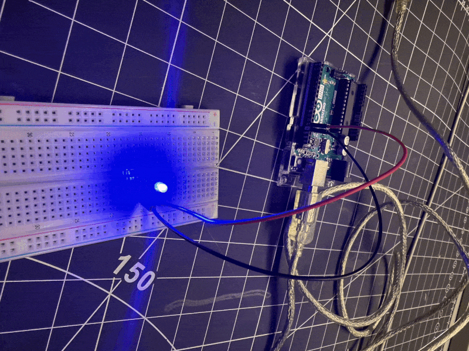
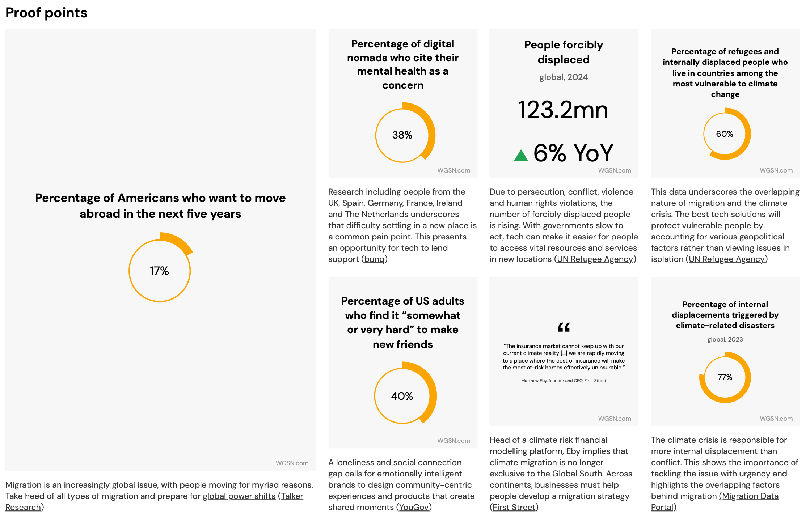
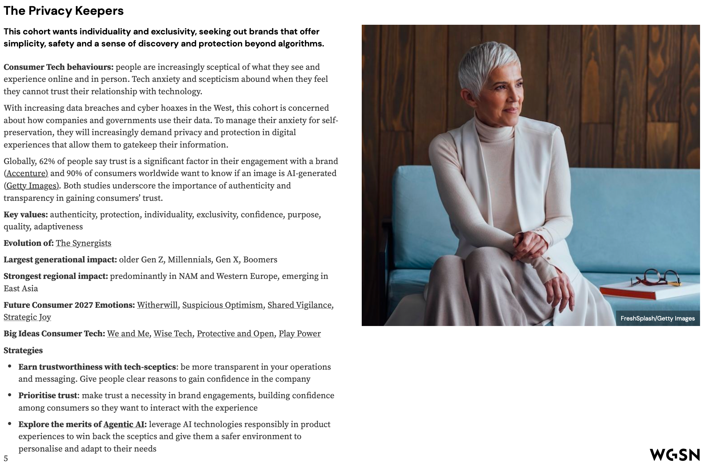
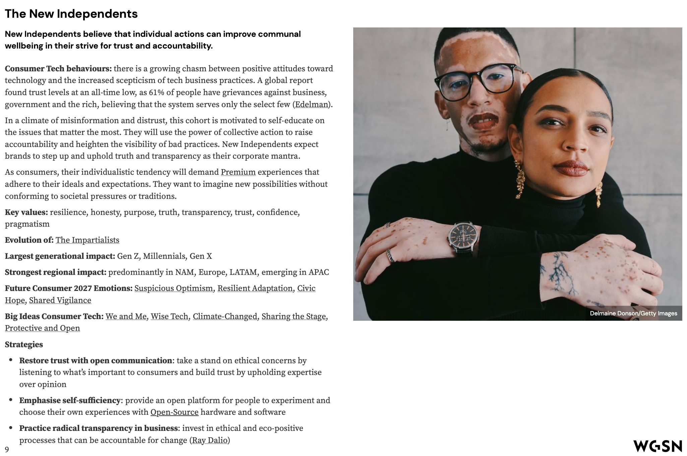

Module 1 Activity Research
Weekly Activity Template
Yiyang Zhang
Project 1
Module 1
In Module 1 we set up the Arduino for the first time. （in class） We connected it to the computer, uploaded the Blink sketch, and tested LEDs and a button to see how basic circuits work.
Activity 1

Activity 2


Activity 3


Research Activity
WGSN Consumer Trend Research
Category 1 — Solarpunk Futures
Summarize
Sustainable, low-energy, community-driven tech for everyday life.
Focus: renewable micro-grids, repairable products, calm/energy-aware interfaces.
What makes this category unique? Example product
It is unique because it makes “green tech” simple and local. Example: Solar Protocol — a solar-powered server
network that shifts hosting to the sunniest node.
Most important statistic & effect on my choice
The renewable energy market is growing by 4.22% each year. This shows a clear need for energy-aware design,
which is why I chose this category.

Category 2 — Nomadic Tech
Summarize
Tools for people on the move—by choice or by force—covering communication, safety, identity and belonging.
Focus: offline-first messaging, satellite links, portable ID, helpful onboarding for newcomers.
What makes this category unique? Example product
It is unique because it combines mobility with digital identity. Example: ZOLEO satellite messenger for global
SOS and QuarkID for decentralised ID.
Most important statistic & effect on my choice
In 2024, 123.2 million people were forcibly displaced, 77% due to climate disasters. This convinced me that
nomadic tools are essential for future projects.


WGSN Personas Research
Category 1 — The Privacy Keepers
Summarize the Persona
Trust-seeking users who want simplicity, safety and control beyond algorithms.
They prefer calm, transparent tech that protects identity and reduces anxiety.
Describe the Generational Impacts
Shaped by older Gen Z, Millennials, Gen X and Boomers amid rising data breaches and AI scepticism.
They reward brands that are authentic, open and privacy-first.
Key Data (Behaviours • Buying Priorities • Actions)
• Behaviours: cautious online, sceptical of AI-generated content, want control over data.
• Buying Priorities: trust and authenticity are decisive factors.
• Actions: choose products that are transparent, private-by-design and allow user agency.

Category 2 — The New Independents
Summarize the Persona
Purpose-driven consumers who believe individual action can improve community wellbeing.
They value resilience, honesty and repairable, transparent products.
Describe the Generational Impacts
Led by Gen Z and Millennials, with influence from Gen X.
They are shaped by civic optimism, DIY attitudes and distrust of traditional business practices.
Key Data (Behaviours • Buying Priorities • Actions)
• Behaviours: self-educate, choose sustainable and repair-friendly options.
• Buying Priorities: durability, traceability and material truth over coatings.
• Actions: demand radical transparency, invest in eco-positive systems and support open-source tools.

HMI Research
Category 1 — Solarpunk Futures
Problem Spaces
1. Renewable tech often feels too complex or inaccessible for everyday users.
2. Communities lack easy-to-repair, low-energy devices that align with sustainable living.
HMI/HMW Statements
• How might we design everyday tech that is both sustainable and simple for non-experts to adopt?
• How might we encourage repairable and energy-aware design that helps communities reduce waste?
Category 2 — Nomadic Tech
Problem Spaces
1. Displaced or mobile populations often lose access to secure identity and communication tools.
2. Nomadic lifestyles face challenges in preserving cultural belonging and continuity.
HMI/HMW Statements
• How might we create portable digital identity solutions that work offline and remain secure?
• How might we support cultural preservation and belonging for nomadic or displaced people using technology?
Project Path
ART Path
Are you more interested in following an ART or DESIGN Path? Why?
I chose the ART path because I want to explore creative expression through interactive visuals.
Using TouchDesigner, I can transform input signals (like sound, motion)
into artistic output visuals, which feels more open-ended and expressive than purely functional design.
Are you more interested in working INDIVIDUALLY or COLLABORATIVELY? Why?
I prefer working individually in this context, because art allows me to experiment freely and follow
my own vision. It’s important to have personal control over the aesthetics and mood I want to create.
Possible project directions
Develop a personal “data portrait” project, where personal signals (heartbeat, gestures, or movement)
are visualized in artistic forms, showing identity and emotion through live visuals.
DESIGN Path
Are you more interested in following an ART or DESIGN Path? Why?
The DESIGN path would focus more on practical outcomes, such as usability and structured experiences.
I am less drawn to this path because my current focus is artistic exploration, but design thinking
is still useful when structuring how audiences will interact with my visuals.
Are you more interested in working INDIVIDUALLY or COLLABORATIVELY? Why?
Design projects often benefit from collaboration, since input from different people helps
create more inclusive and user-friendly outcomes. In this case, working collaboratively
would be stronger, because design is about solving real problems for users.
Possible project directions
Build a collaborative installation that translates group activity (like multiple people moving together)
into a shared visual output, emphasizing connection and interaction.
Project 1 Concept
ART Path — Signal → Visual (TouchDesigner)
This project transforms real-world signals into generative visuals using TouchDesigner. It draws from my WGSN research: Solarpunk Futures (making energy visible) and Nomadic Tech (supporting belonging without exposing identity). The work is developed individually to keep a strong artistic voice and iterate quickly.
Problem spaces → HMI fit
- Energy is invisible at home; people can’t tell when to save or spend it.
- Mobile/nomadic users struggle to keep a sense of identity and community privately.
Input signals
- Energy channel (Solarpunk): solar irradiance, battery state-of-charge, priority loads.
- Nomadic channel: offline check-ins/NFC tokens, coarse GPS proximity, optional mood tag.
Output visuals (TD)
- Calm color/particle fields that map to energy budget (green → amber → red) and load badges.
- Evolving pattern tiles seeded by check-ins to preserve belonging without revealing PII.
Tech & format
- TouchDesigner + Serial/MQTT; ESP32 + sensors; LED strip or short-throw projection.
Success criteria
- Viewers grasp “energy abundant vs scarce” in < 3 seconds.
- All personal data stays local/offline-first; no raw PII leaves the device.
Powered by w3.css